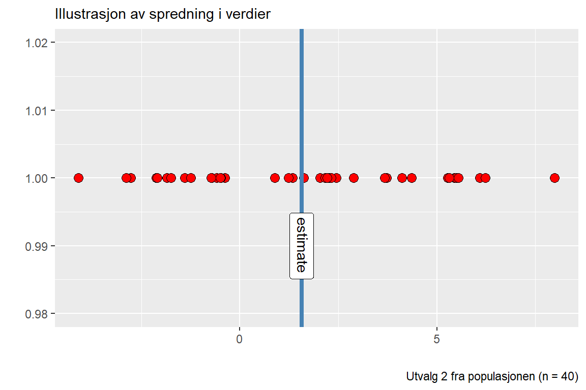

3Assignment 3: Drawing inference from statistical models, and statistical power
3.1 Introduksjon
Statistisk inferens er en type statistikk som omhandler metoder for å trekke konklusjoner om en populasjon basert på et utvalg. Målet er å generalisere funnene fra utvalget og bruke det til å si noe om hele populasjonen. En viktig del av statistisk inferens er å vurdere usikkerheten i estimatene, typisk ved hjelp av konfidensintervaller og p-verdier (Cremers, Wager, and Yarkoni 2017).
Effektstørrelser gir en kvantitativ vurdering av hvor betydelig en observert effekt er, og er ikke avhengig av utvalgsstørrelse. Dette er nyttig i forskning, da det hjelper med å forstå de praktiske betydningene av funnene man har gjort. Ved å kombinere statistisk inferens med effektstørrelser kan man bedre vurdere resultatene sine og sette det i en bred kontekst (Cremers, Wager, and Yarkoni 2017).
Code
library(tidyverse)library(ggtext)library(gt)set.seed(1)population <-rnorm(1000000, mean =1.5, sd =3)#lager to ulike utvalg der gruppe 1 er n=8 og gruppe 2 n=40samp1 <-data.frame(y =sample(population, 8, replace =FALSE))samp2 <-data.frame(y =sample(population, 40, replace =FALSE))m1 <-lm(y ~1, data = samp1)m2 <-lm(y ~1, data = samp2)sum1 <-summary(m1) sum2 <-summary(m2)
Code
# plotter samp 1 og 2 for å illustrere den relative spredningen i utvalgetsamp1 |>ggplot(aes(y, 1)) +geom_point(size =3, shape =21, fill ="orange") +geom_vline(xintercept =coef(sum1)[1], color ="steelblue", linewidth =1.5) +annotate("richtext", x =coef(sum1)[1], y =0.99, label ="estimate", angle =-90) +coord_cartesian(y =c(0.98, 1.02)) +labs(subtitle ="Illustrasjon av spredning i verdier", caption ="Utvalg 1 fra populasjonen (n = 8)",x ="", y ="")
Code
samp2 |>ggplot(aes(y, 1)) +geom_point(size =3, shape =21, fill ="red") +geom_vline(xintercept =coef(sum2)[1], color ="steelblue", linewidth =1.5) +annotate("richtext", x =coef(sum2)[1], y =0.99, label ="estimate", angle =-90) +coord_cartesian(y =c(0.98, 1.02)) +labs(subtitle ="Illustrasjon av spredning i verdier",caption ="Utvalg 2 fra populasjonen (n = 40)", x ="", y ="")

3.2 Forklar estimatet, standard error (SE), t-verdien, p-verdien fra regresjonen som vi lagde fra m1 og m2
3.2.1t-verdi
T-verdien brukes for å sammenlikne gjennomsnittet av to ulike datasett. T-verdien tar altså differansen mellom gjennomsnittet av utvalget og gjennomsnittet av populasjonen, og ser på det i forhold til standardavviket over kvadratroten av antallet i utvalget, slik som formelen viser under.
\(t = \frac{(\overline{x}-\mu_{0})} {\frac{s} {\sqrt n}}\), der \(\overline{x}\) = gjennomsnittet av utvalget, \(\mu_{0}\) = gjennomsnittet av populajsonen, s = standardavviket, n = størrelsen av utvalget
T-verdien brukes for å støtte opp under vår nullhypotese, eller forkaste den. Jo nærmere t er null, destod større sannsynlighet for at det ikke er noen signifikant forskjell. Hvis vi tar høyde for at gruppen med størst utvalg vil være den gruppen med minst feilmargin, vil dette stemme i vårt tilfelle med sample 1 og 2, der t er større i sample 1 (1.47), sammenliknet med t i sample 2 (3.276).
3.2.2p-verdi
Sier noe om usikkerheten i trekningen av utvalget. Kanskje trakk man i sample 1 bare ekstreme verdier. Utvalget vil neppe bli en perfekt representasjon av populasjonen uansett hvordan man trekker ett utvalg. Dette er en usikkerhet man må ta høyde for i ulike studier og dette kan p-verdien hjelpe oss å si noe om. Om vi tar høyde for at nullhypotesten stemmer, hvor mange verdier kan vi forvente er mer ekstreme enn våre observasjoner. p-veriden måler altså observasjonene våre opp mot den spesifikke nullhypotesen.
3.2.3SE
standard error er en måte å angi feilmarginen av et estimat eller måling. Man benytter ofte sentralgrenseteoremet i denne sammenhengen, som sier at hvis man gjør en undersøkelse mange ganger, vil resulatene samle seg omkring den sanne verdien. Jo større utvalg, jo mindre feilmargin.
Manuelt kan man beregne SE ved å ta standardavviket og dele på kvadratroten av antall observasjoner. Dette gir oss altså et svar på hvor langt unna det sanne gjennomsnittet kan vi forvente å komme. I tilfellet vårt ser vi at SE for sample 1 er tydelig større enn i sample 2, nettopp pga et mindre utvalg i sample 1. Vi kan altså forvente å få verdier lenger unna den sanne gjennomsnittsverdien ved et mindre utvalg.
3.2.4Estimatet
Estmatet er gjennomsnittet av alle verdiene i utvalget, så i sample 1 er estmiatet 1.84 og i sample 2 er estimatet 1.564.
3.3 Hva bidrar til de ulike resulatene i de to studiene (m1 og m2)
Forskjellen mellom sample 1 og 2 er antall som trekkes ut, utvalget. Med et større utvalg blir SE lavere og p-verdien også lavere, sammenlinket med et utvalg som er mindre.
3.4 Hvorfor benytter vi begge “halene” i t-fordelingen (two-tailed test)
En two-tailed test tillater at man ser på mulighet for endring i begge retninger, altså positiv og negativ retning. Hvis man undersøker ulike behandlinger, for eksempel for blodtrykk, vil man være interessert i å se på positive og negative endringer mellom grupper.
Code
# Create data frames to store the model estimatesresults_8 <-data.frame(estimate =rep(NA, 1000), se =rep(NA, 1000), pval =rep(NA, 1000), n =8) results_40 <-data.frame(estimate =rep(NA, 1000), se =rep(NA, 1000), pval =rep(NA, 1000), n =40)# A for loop used to sample 1000 studies, each iteration (i) will draw a new sample# from the population. for(i in1:1000) {# Draw a sample samp1 <-data.frame(y =sample(population, 8, replace =FALSE)) samp2 <-data.frame(y =sample(population, 40, replace =FALSE))# Model the data m1 <-lm(y ~1, data = samp1) m2 <-lm(y ~1, data = samp2)# Extract values from the models results_8[i, 1] <-coef(summary(m1))[1, 1] results_8[i, 2] <-coef(summary(m1))[1, 2] results_8[i, 3] <-coef(summary(m1))[1, 4] results_40[i, 1] <-coef(summary(m2))[1, 1] results_40[i, 2] <-coef(summary(m2))[1, 2] results_40[i, 3] <-coef(summary(m2))[1, 4]}# Save the results in a combined data frameresults <-bind_rows(results_8, results_40)
3.5 Kalkuler standardavvik for estimat-variabelen og gjennomsnittet av se-variabelen for begge utvalgene.
Standard error: \(SE = \frac{\sigma}{\sqrt n}\) , der \(\sigma\) = standardavviket for utvalget og n = antall i utvalget.
For utvalget med n=8 er standardavviket for snittet av utvalget 1.039 og gjennomsnittet av standardfeilen 1.012. Altså tilnærmet likt. Det samme gjelder for utvalget med n=40 (bare med mindre avvik) der standardavviket for snittet av utvalget er 0.474 og gjennomsnittet av standardfeilen er 0.472. Hvordan kan man definere standardfeilen, sett i lys av disse variablene? På generell basis kan man si at SE for et utvalg er et estimat på standardavviket til den teoretiske fordelingen av gjennomsnitt. Observerer at når “n” (utvalget) øker, vil standardfeilen synke (ref. formel for beregning av SE).
3.6 Lag et histogram av p-verdiene for de to uvalgene. Hvordan kan histogrammene tolkes og hva forteller de om effekten av størrelsen av utvalget for statistisk styrke?
Code
library(ggtext)library(dplyr)library(gt)# A two facets histogram can be created with ggplot2results %>%ggplot(aes(pval)) +geom_histogram(bins =25, color ="black", fill ="orange") +facet_wrap(~ n) +labs(x ="*p*-values", y ="Number of simulations", subtitle ="Fordelingen av *p*-verdier fra 1000 simuleringer", caption ="Hver bar representerer antall simuleringer av en gitt *p*-verdi") +theme(axis.title.x =element_markdown()) +theme(plot.subtitle =element_markdown()) +theme(plot.caption =element_markdown())
Code
# Count the proportion of tests below a certain p-value for each results %>%filter(pval <0.05) %>%group_by(n) %>%summarise(sig_results =n()/1000) |>gt() |>tab_caption("Summering av signifikante resultater") |>cols_label(n ="Utvalgsstr.", sig_results ="Signif. res. / 1000")
Summering av signifikante resultater
Utvalgsstr.
Signif. res. / 1000
8
0.222
40
0.877
I histogrammet med n=8 kan er se stor variasjon innad i utvalgene. Ved de 1000 simuleringene som er gjort er det sannsynlig at det har vært stor spredning i de variablene som er trekt i samme utvalg (og motsatt). Dermed vil disse enkelt-utvalgene gjøre utslag på p-verdien begge veier. Ved å plotte det slik fremheves også tendensen til falsk-positive simuleringer ved p = 0.05. En falsk positiv oppstår når en test indikerer en signifikant effekt, slik at man forkaster nullhypotesten (H0), men det egentlig ikke er en effekt der (H0 er sann).
3.7 Antall observasjoner fra hvert utvalg som er under signifikansnivået på 0.05
Setter signifikansnivå til p < 0.05 Det er 877 tilfeller der p < 0.05 for utvalget med 40. Det er 222 tilfeller der p< 0.05 for utvalget med 8.
3.8 Estmerer effekten ved one-sample t-test
Code
# Using the pwr packagelibrary(pwr)pwr_8 <-pwr.t.test(n =8, sig.level =0.05, d =1.5/3, type ="one.sample")pwr_40 <-pwr.t.test(n =40, sig.level =0.05, d =1.5/3, type ="one.sample")pwr_8
One-sample t test power calculation
n = 8
d = 0.5
sig.level = 0.05
power = 0.232077
alternative = two.sided
Code
pwr_40
One-sample t test power calculation
n = 40
d = 0.5
sig.level = 0.05
power = 0.8693981
alternative = two.sided
Effekt ved utavlget på 8 stk: 0.232. Effekt ved utvalget på 40 stk: 0.869. En kan forvente høyere effekt med et større utvalg. Dette observeres i vårt tilfelle. Med høyere effekt, vil en også forvente å se større grad av signifikans, altså en lavere p-verdi (som også er tilfellet i denne simuleringen).
3.9 Ved å benytte det nye datasettet: hvor mange tilfeller av “falsk positive”-tester vil vi komme over ved å repetere studien mange ganger?
Code
population <-rnorm(1000000, mean =0, sd =3)# Create data frames to store the model estimatesresults_8 <-data.frame(estimate =rep(NA, 1000), se =rep(NA, 1000), pval =rep(NA, 1000), n =8) results_40 <-data.frame(estimate =rep(NA, 1000), se =rep(NA, 1000), pval =rep(NA, 1000), n =40)for(i in1:1000) {# Draw a sample samp1 <-data.frame(y =sample(population, 8, replace =FALSE)) samp2 <-data.frame(y =sample(population, 40, replace =FALSE))# Model the data m1 <-lm(y ~1, data = samp1) m2 <-lm(y ~1, data = samp2)# Extract values from the models results_8[i, 1] <-coef(summary(m1))[1, 1] results_8[i, 2] <-coef(summary(m1))[1, 2] results_8[i, 3] <-coef(summary(m1))[1, 4] results_40[i, 1] <-coef(summary(m2))[1, 1] results_40[i, 2] <-coef(summary(m2))[1, 2] results_40[i, 3] <-coef(summary(m2))[1, 4]}# Save the results in a combined data frameresults_null <-bind_rows(results_8, results_40)
Code
#lager histogram for koden overggplot(data = results_null, aes(pval)) +geom_histogram(binwidth =0.05, color ="black", fill ="lightgreen",) +facet_wrap(~ n) +labs(subtitle ="Fordelingen av *p*-verdier fra 1000 simuleringer", caption ="Hver bar representerer antall simuleringer av en gitt *p*-verdi", x ="*p*-verdier", y ="Number of simulations") +theme(axis.title.x =element_markdown()) +theme(plot.subtitle =element_markdown()) +theme(plot.caption =element_markdown())
Code
falsepos_8 <- results_null |>filter(results_null$pval <0.05, n ==8) |>nrow()falsepos_40 <- results_null |>filter(results_null$pval <0.05, n ==40) |>nrow()
Ved å repetere studien 1000 ganger, vil vi komme over 53 falsk-positive tester for utvalget med 8, og 43 for utvalget med 40. Totalt antall falsk-positive tester blir 96.
3.10 Referanser
Cremers, Henk R, Tor D Wager, and Tal Yarkoni. 2017. “The Relation Between Statistical Power and Inference in fMRI.”PLoS One 12 (11): e0184923.